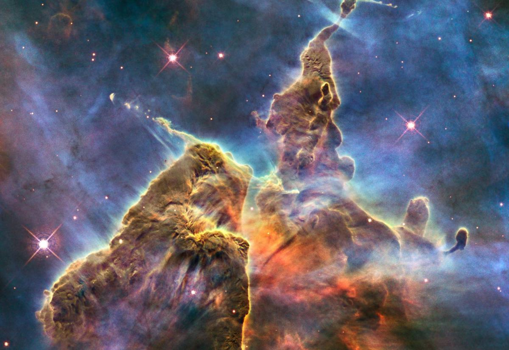

La théorie du Big Bang est la théorie la plus acceptée pour expliquer l'origine de l'univers, suggérant qu'il a commencé en tant que point dense et petit il y a environ 13,8 milliards d'années, et s'est ensuite développé pour devenir l'univers que nous connaissons aujourd'hui. Cette théorie aide à comprendre l'évolution de l'univers au fil du temps.
Photo de l'espace
Cette photo a été prise par le télescope Hubble en 2014. On y voit plus de 10 000 galaxies. Cette image est située à une distance de
10 milliards d'années-lumière, ce qui signifie que nous les observons telles qu'elles étaient il y a 10 milliards d'années. ici
Les Nebuleuses
Voici une Nebuleuse.Lorsque les étoiles meurent, elles laissent derrière elles d'immenses nuages de gaz et de poussières stellaires. C'est là que se forment de nouveaux astres. Cet ensemble, appelé Montagne mystique, est situé dans la nébuleuse de la Carène. Elle se trouve à 7 500 années-lumière de la Terre
Les quasars
Les quasars sont des objets extrêmement lumineux et éloignés situés aux confins de l'Univers. Ils sont associés à des noyaux galactiques actifs qui abritent des trous noirs supermassifs. Leur luminosité intense, plusieurs milliards de fois supérieure à celle de notre galaxie, est due à l'accrétion de matière par ces trous noirs. Les quasars, observés dans différentes gammes du spectre électromagnétique, fournissent des informations précieuses sur l'évolution des galaxies et de l'Univers.(C'est évidemment une fausse image.)